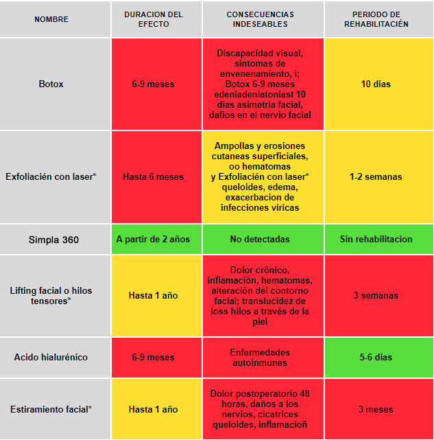
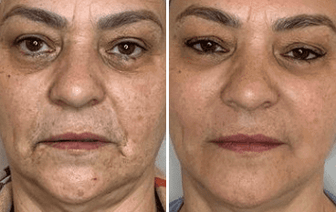
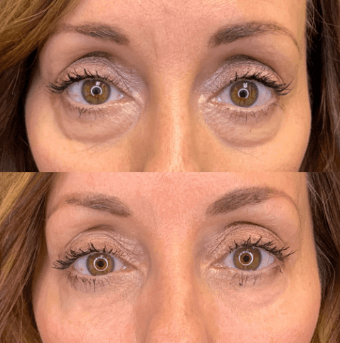

— "INCLUSO CON 83 AÑOS, PUEDES PARECER MÁS JOVEN SIN BOTOX"
¿Cómo borrar de tu rostro decenas de años vividos?
Ganadora del concurso "Historias de la vida real"
Hola, hoy está con nosotros Marisol Hernández, de Mérida. Marisol envió a nuestro equipo editorial una historia increíble que cambió su vida. Esta historia ayudará a la gente común a borrar literalmente decenas de años de su rostro y a recuperar su belleza.
Nadie quiere envejecer
No hace mucho, mi madre y yo parecíamos ancianas. La belleza y la juventud fueron sustituidas por las arrugas.
Mi madre tiene 83 años. Ella siempre aparento más edad de la que tenía, y son muchas las razones para ello.
Ella había trabajado en el campo la mayor parte de su vida. El sol abrasador y el viento habían dejado una notable marca en el hermoso rostro de mi madre.
Mi padre murió cuando yo era sólo un bebé y mi madre tuvo que criar sola a 10 hijos. Así que durante muchos años sus pensamientos se centraron únicamente en cómo sobrevivir y alimentar a su numerosa familia. La mala alimentación y el estrés constante... Todo ello provocó el envejecimiento prematuro de la piel. Esta mujer era muy autosuficiente, llevando esta carga. Evidentemente, eso fue lo que le quitó la juventud.
Los científicos descubrieron que la aceleración del envejecimiento está directamente relacionada con factores externos. La piel del rostro envejece debido al estrés, la edad, la ecología, los cuidados inadecuados o la falta de ellos. Los factores genéticos sólo representan el 20%.
Todo empezó con las patas de gallo y terminó con arrugas profundas y tempranas, el óvalo facial se volvió difuso y la piel flácida.
Ambas nunca pensamos que el estilo de vida pudiera tener un efecto tan devastador para la belleza y la juventud de la piel. Para ambas, la pérdida de la belleza fue una verdadera tragedia...
Vejez en el reflejo
Tengo 44 años. Mi marido me dejó por una joven belleza porque parezco una vieja. Siempre pensé que el resto de mi vida lo pasaría sola y sin belleza.
Mi piel siempre fue seca y envejeció pronto. Me avergonzaba de mis arrugas, me deprimía por ellas. Mirando en el espejo cómo envejecía día tras día, derramé lágrimas y me rendí.
La cirugía, el Botox y los rellenos faciales, todos estos procedimientos para recuperar la juventud, son cosa de ricos. La gente paga cientos de miles de pesos por estos procedimientos, y los que no tienen esa oportunidad permanecen viejos. No podía pagar ninguno de estos procedimientos y estaba segura de que nunca recuperaría mi juventud.
En un momento, la vida cambió a causa de un acontecimiento al que Dios mismo nos condujo...
Rejuvenecí casualmente
Una amiga me regaló un suero rejuvenecedoro prometiendo que este producto haría que mi piel se viera joven, tensa, y que yo parecería 20 años más joven.
Desconfiaba de los sueros rejuvenecedores. Tenía mucha experiencia en el uso de diversos productos para el rejuvenecimiento de la piel, y ninguno de ellos me ayudó. Algunos de estos sérums sólo agravaban la situación con reacciones alérgicas. Por eso pronto me olvidé del regalo...
Mientras tanto mi madre la utilizaba. Como tenía mala visión, confundió el serum de rejuvenecimiento facial con el suero de manos.
— "Marisol, tócame las manos, se han vuelto muy suaves", — me dijo mi madre.
Me quedé petrificada con lo que vi. Era como si sus manos tuvieran veinte años menos. Estaban hidratados, todas las arrugas se habían alisado, la piel se había tensado y se había vuelto más elástica, e incluso el tono de la piel era uniforme.
— "¿Mamá, qué te has hecho en las manos?" — exclamé.
— "Nada, solo tomé una de tus suero".
Según mi madre, utilizó esto suero durante un mes, sólo una vez al día.
Yo no entendía cómo era posible; parecía que mi madre se había sometido a un tratamiento de Botox en secreto. Casi me vuelvo loca. ¿Podría esta suero satisfacer realmente mi deseo de ser bella?
Este hecho me convenció de utilizar el suero para su propósito.
Una nueva vida
Pedimos un envase adicional y ambas utilizamos el suero diariamente.
Tras el primer día de uso, noté un ligero efecto, mi piel se sentía mucho más agradable al tacto. Incluso podía sentir físicamente estos cambios, como si el calor se extendiera por mi cara.
Cada día desaparecían las líneas finas y las manchas oscuras, mi cutis se volvía más sano y mi piel más elástica. No podía creerlo.
Tras un mes de uso, casi todas las arrugas e imperfecciones de la piel desaparecieron. Los resultados fueron increíbles. Parecíamos 20 años más jóvenes y ambas estábamos literalmente radiantes de felicidad. Ya pasó un año y nuestras caras siguen siendo hermosas.
Mamá tiene un aspecto increíble, hacía tiempo que no la veía tan feliz y con tanta energía. Ahora sale a pasear cada vez más a menudo y dice bromeando:
— "Marisol, no me he vuelto tan guapa sólo para quedarme en casa. Ahora sin vergüenza puedo salir a la calle y mostrar mi juventud".
Mis amigos y conocidos no paran de hacerme cumplidos cada vez que se encuentran conmigo. Incluso piensan que me he inyectado Botox o que me he sometido a una cirugía plástica. Todo el mundo se preguntaba cuándo me hice esto.
La transformación me llenó de energía, me dio más confianza. Los chicos dos veces menores que yo quieren hacer amistad conmigo. Ahora, este aspecto podría engañar a cualquiera. Ni siquiera podría soñar con eso.
Hace poco conocí a un hombre muy atractivo que tiene 36 años. Él pensó que tenía 25 años, y cuando se enteró de mi verdadera edad, le llamó la atención que pareciera tan joven.
Hace 9 años que me divorcié de mi marido, y por primera vez desde entonces tengo una relación. Mi nueva pareja me quiere muchísimo, me habla constantemente de amor y alaba mi belleza. Al recuperar mi juventud, pude recuperar la atención que había soñado durante tanto tiempo. La atención que toda mujer merece.

En México son muchas las mujeres que no pueden o no quieren utilizar métodos caros y traumáticos de rejuvenecimiento. Por eso conté mi historia, con la esperanza de ayudar a mujeres como yo a recuperar su belleza.
El método del que hablé es . Se trata de un método sorprendente, fácil y asequible para que cualquiera pueda rejuvenecer rápidamente su piel en casa. Y deseo que todas las mujeres experimenten un nuevo florecimiento de la juventud, independientemente de su edad.
Una pregunta al experto: ¿qué es y por qué es mejor que otros tratamientos antienvejecimiento?
María Romero
Médico, dermatólogo-esteticista, 25 años de experiencia en dermatología
— "El rejuvenecimiento es un deseo humano natural, pero no todo el mundo sabe hacerlo de forma competente, por lo que la gente gasta mucho dinero en procedimientos inútiles y a veces peligrosos.
se convirtió en la mejor solución en la lucha contra el envejecimiento de la piel debido a sus resultados sin consecuencias. Por eso la propongo como alternativa a mis clientes que rechazan los tratamientos de salón preocupados por las consecuencias."
Resumen de los métodos de rejuvenecimiento de la piel más populares en :
| Nombre | Duracion del efecto | Consecuencias indeseables | Periodo de rehabilitacién |
|---|---|---|---|
| Botox | 6-9 meses | Discapacidad visual, sintomas de envenenamiento, i; Botox 6-9 meses edeniadeniatoniast 10 dias asimetria facial, dafios en el nervio facial |
10 dias |
| Exfoliacién con laser* | Hasta 6 meses | Ampollas y erosiones cutaneas superficiales, oo hematomas y Exfoliacién con laser* queloides, edema, exacerbacion de infecciones viricas |
1-2 semanas |
| A partir de 2 años | No detectadas | Sin rehabilitacion | |
| Lifting facial o hilos tensores* | Hasta 1 año | Dolor crõnico, infiamaciõn, hematomas, alteraciõn del contorno facial; translucidez de loss hilos a través de la piel | 3 semanas |
| Acido hialurénico | 6-9 meses | Enfermedades autoinmunes | 5-6 dias |
| Estiramiento facial* | Hasta 1 año | Dolor postoperatorio 48 horas, daños a los nervios, cicatrices queloides, inflamacioñ | 3 meses |
— "Esta comparación demuestra una vez más que es el mejor método, que supera a los tratamientos de salón en todos los sentidos".
¿Para quién es adecuada esta suero?
— "Con , todo el mundo puede tener una piel facial sana y joven, independientemente de la edad, la salud o el estado inicial de la piel.
Para esta suero, los fabricantes desarrollaron una fórmula única compuesta de extractos 100% naturales. La fórmula regula los efectos de los factores externos: protege la piel de los rayos UV, la hidrata, la tonifica y la protege de las toxinas.
A partir de los 25 años, la producción de colágeno y elastina en la piel disminuye, restablece los procesos de regeneración, obligando a la piel a producir por sí misma estas sustancias, recuperando así su aspecto saludable".
Los resultados por el uso de la suero:
- Reducción de arrugas y pliegues profundos;
- Mejora de los procesos metabólicos;
- Reducción de la hiperpigmentación y de las manchas de pigmentación, igualando el tono de la piel;
- Protección contra los efectos de la radiación solar y otros factores externos;
- Mantiene la hidratación y fortalece la piel.
¿Hay otros ejemplos de rejuvenecimiento además del ejemplo de Marisol y su madre?
— "De hecho, el ejemplo de la madre de Marisol es uno de los más reveladores, porque a la piel envejecida le cuesta más estimular los procesos de regeneración. Pero logró hacer retroceder el tiempo incluso en un caso tan difícil.
Mis clientes, tras obtener excelentes resultados con el uso de la suero, la piden para sus madres, abuelas, y éstas, al notar el efecto, lo cuentan a sus amistades y conocidos.
A menudo recomiendo este suero a mis clientes y recibo cientos de comentarios positivos".
¿Dónde pueden nuestros lectores comprar l?
El suero se vende únicamente a través del Internet . El suero no puede comprarse en farmacias o salones de belleza. Ya que no es rentable para su negocio. Es mucho más rentable para las organizaciones comerciales vender productos más caros e ineficaces, para que los clientes vengan más a menudo y desembolsen grandes cantidades de dinero regularmente. Desgraciadamente, la burocracia no puede ser erradicada.
Sin embargo, esta situación beneficia a las personas. Al vender productos a través del sitio web, los fabricantes no tienen que gastar dinero en gastos adicionales, por lo que el precio del producto es muy bajo y todo el mundo puede comprarlo.
Para dar a conocer este suero y superar la burocracia, los fabricantes están llevando a cabo una promoción temporal. Puede participar cualquier residente mexicanos que lo desee.
Los lectores pueden ganar un descuento de hasta el 50%. Date prisa, el precio del producto sin la promoción es de . Ahora puedes comprar el suero por si tienes la suerte de ganar el máximo descuento.
Comentarios:
Luz Marina
Mi madre me habló de este suero cuando me di cuenta de lo mucho que había cambiado. Sólo hay que ver el efecto que consiguió en 2 semanas. ¿Acaso puedes decir que la mujer de la foto cumplió recientemente 61 años?
Gabriela N.
Mi marido me regaló el suero de en mi cumpleaños y fue el mejor regalo, ¡me regaló la juventud!:)
María Celeste
¡Una historia muy inspiradora y un cambio asombroso 😍 Ya pedí la suero, compartiré los resultados!
María Celeste
Como prometí, comparto mis resultados. Es algo increíble, mi piel está elástica y suave como la de un bebé. Parezco 10 años más joven después de sólo una semana de usar . ¡Que Dios te bendiga Marisol!
Claudia Veru
No hay accidentes. Toda mujer merece ser bella.
Pedro
Es un producto excelente. ¡Los suizos que inventaron el suero saben mucho de calidad! Lo principal es no comprar análogos aún más baratos, ya que son 100% falsos.
Luisa Fernanda
Si quisieras hacer un lifting facial con hilos o un rejuvenecimiento con láser, mejor que no lo hagas. Es lo peor que me pasó en mi vida. Dolor insoportable, largo tiempo de curación, incluso el hilo se desgarraba bajo la piel. Después de eso, juré no volver a utilizar procedimientos cosméticos. He pedido y estoy deseando ver los resultados.
Ramona Martínez
¿Cuánto durará la promoción?
Darlisa García
Ramona , acabo de pedir la suero. El gerente de la empresa dijo que en cuanto se agoten las cajas con descuento, la promoción cesará.
Camila Pérez
Los desconocidos ahora creen que tengo menos de 30 años aunque ya cumplí los 50, gracias .
Patricia Romero
¡Camila , te ves increíble y no pareces tener 50 años! Yo te daría 27 años. ¡¡¡Y hace tiempo que quiero encontrar un buen estiramiento facial en tubo!!!
Lucía Aldo
¡¡¡El suero es realmente la mejor!!! Mi hijo me encargó el suero incluso sin el descuento hace 4 meses, ¡vale cualquier dinero!
Vilma Pérez
El estado interior de una mujer, incluida la confianza en sí misma, depende de su belleza exterior. La vida cambia a mejor si te sientes joven y guapa 🤗
Ximena
Me enteré por mi dermatólogo. Es extraño que acabes de escribir un artículo sobre ella, ya que es popular desde hace mucho tiempo.
Elena
Seguí tu consejo y pedí la suero. He oído hablar muy bien de ella a mis amistades, y he visto resultados excelentes, pero no podía decidirme a pedirla. El descuento me convenció. 😍 Tengo uno de los últimos suero con descuento